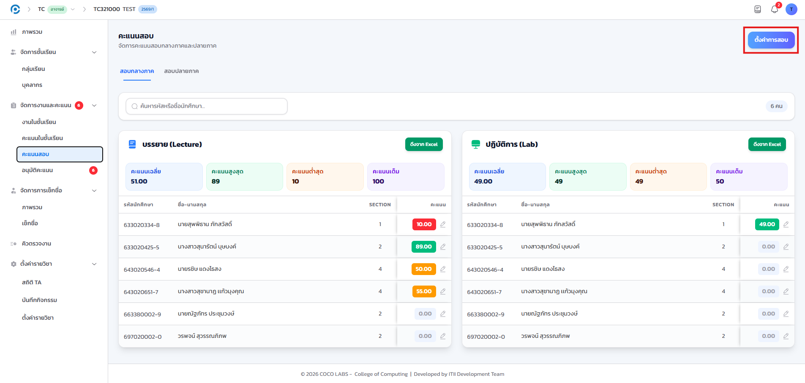
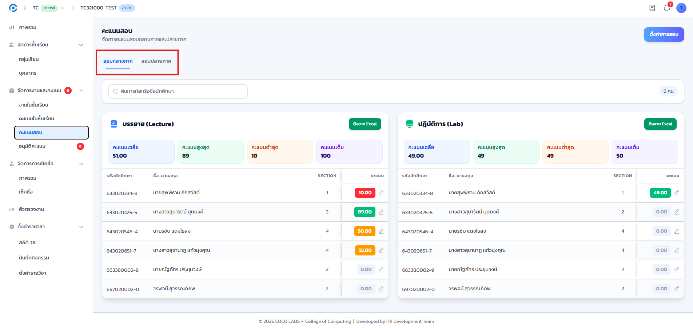
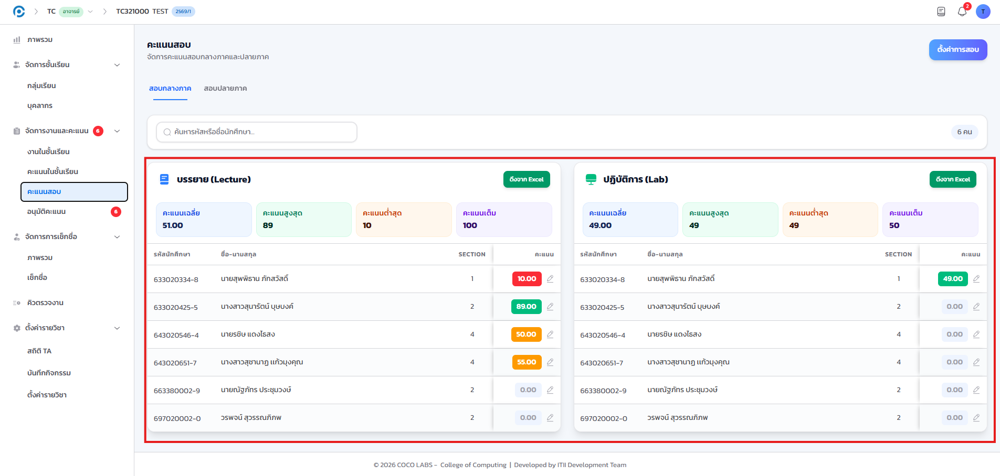
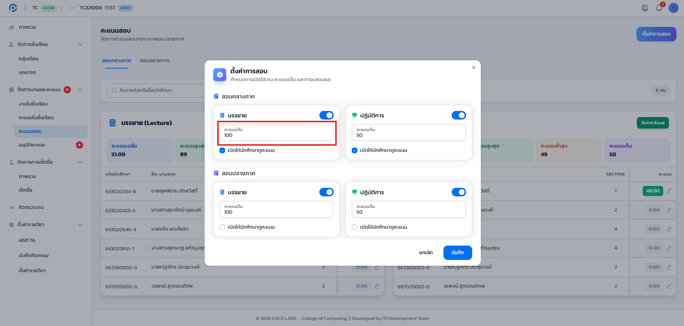
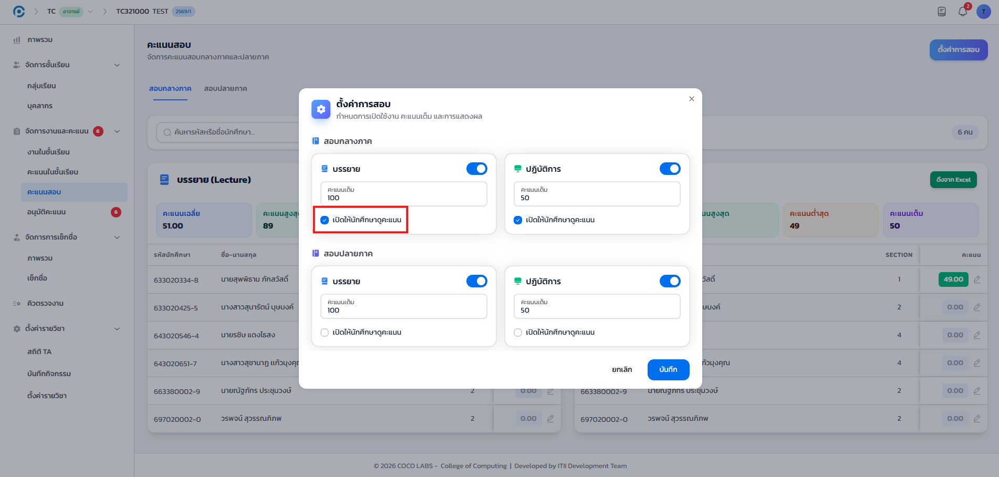
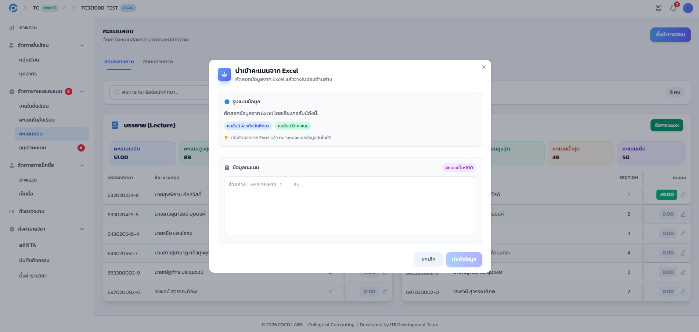
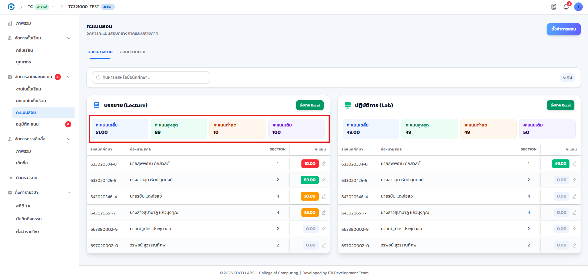
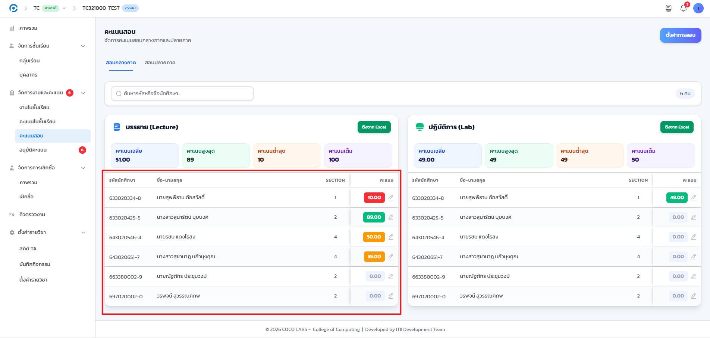

9.1 ภาพรวม#
คะแนนสอบแยกออกจากคะแนนงานตามปกติ โดยแบ่งเป็นสองช่วงคือ สอบกลางภาค และ สอบปลายภาค แต่ละช่วงแยกองค์ประกอบย่อยเป็น บรรยาย และ ปฏิบัติการ ท่านกำหนดคะแนนเต็มและเปิดหรือปิดการมองเห็นของนักศึกษาได้แยกเป็นรายองค์ประกอบ
9.2 ตั้งค่าการสอบ#
เป้าหมายของขั้นตอนนี้ กำหนดโครงสร้างคะแนนสอบของรายวิชา ก่อนเริ่มกรอกคะแนนจริง
- เข้าเมนู จัดการงานและคะแนน แล้วเลือก คะแนนสอบ
- คลิกปุ่ม ตั้งค่าการสอบ มุมขวาบน

- เลือกแท็บ สอบกลางภาค หรือ สอบปลายภาค ที่ต้องการตั้งค่า

สำหรับแต่ละช่วง เปิดใช้งานองค์ประกอบ บรรยาย และ/หรือ ปฏิบัติการ ตามที่รายวิชาต้องการ



หลังคลิก บันทึก องค์ประกอบที่เปิดใช้งานจะปรากฏเป็นคอลัมน์ในตารางคะแนนสอบทันที พร้อมคะแนนเต็มที่กำหนดไว้
9.3 นำเข้าคะแนนจากไฟล์ Excel#
เป้าหมายของขั้นตอนนี้ บันทึกคะแนนของนักศึกษาจำนวนมากพร้อมกันในครั้งเดียว แทนการกรอกทีละคน
- ที่แท็บ สอบกลางภาค หรือ สอบปลายภาค คลิกปุ่มนำเข้าคะแนนจากไฟล์ Excel
- เลือกไฟล์ตามรูปแบบที่ระบบกำหนด แล้วยืนยันการนำเข้า

ท่านกรอกคะแนนของนักศึกษาแต่ละคนในคอลัมน์ "คะแนน" ของตารางโดยตรงได้เช่นกัน หากต้องการแก้ไขเพียงบางราย ไม่จำเป็นต้องนำเข้าไฟล์ใหม่ทั้งหมด
9.4 สถิติและตารางคะแนน#
เป้าหมายของขั้นตอนนี้ ตรวจสอบภาพรวมผลการสอบและรายละเอียดรายบุคคลของรายวิชา
- คะแนนเฉลี่ย
- ค่าเฉลี่ยของทั้งรายวิชาในองค์ประกอบนั้น
- คะแนนสูงสุด / ต่ำสุด
- คะแนนสูงสุดและต่ำสุดที่นักศึกษาทำได้ในองค์ประกอบนั้น
- คะแนนเต็ม
- ค่าที่ตั้งไว้ในข้อ 9.2 ใช้อ้างอิงเทียบสัดส่วน

ตารางด้านล่างแสดงคะแนนของนักศึกษาทุกคนในรายวิชา แยกตามองค์ประกอบที่เปิดใช้งานไว้ในข้อ 9.2

ในระบบมีเครื่องมือ "ผังที่นั่งสอบ" ที่พัฒนาไว้สมบูรณ์แล้ว แต่ยังไม่มีเมนูเชื่อมโยงไปใช้งานในหน้าเว็บปัจจุบัน หากต้องการใช้งานฟีเจอร์นี้ กรุณาสอบถามทีมพัฒนาระบบว่าจะเปิดให้ใช้งานเมื่อใด